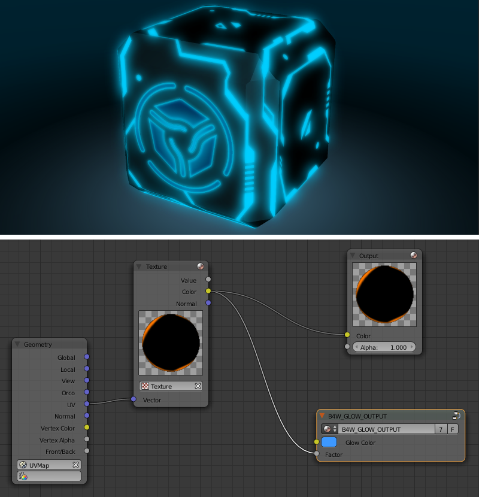
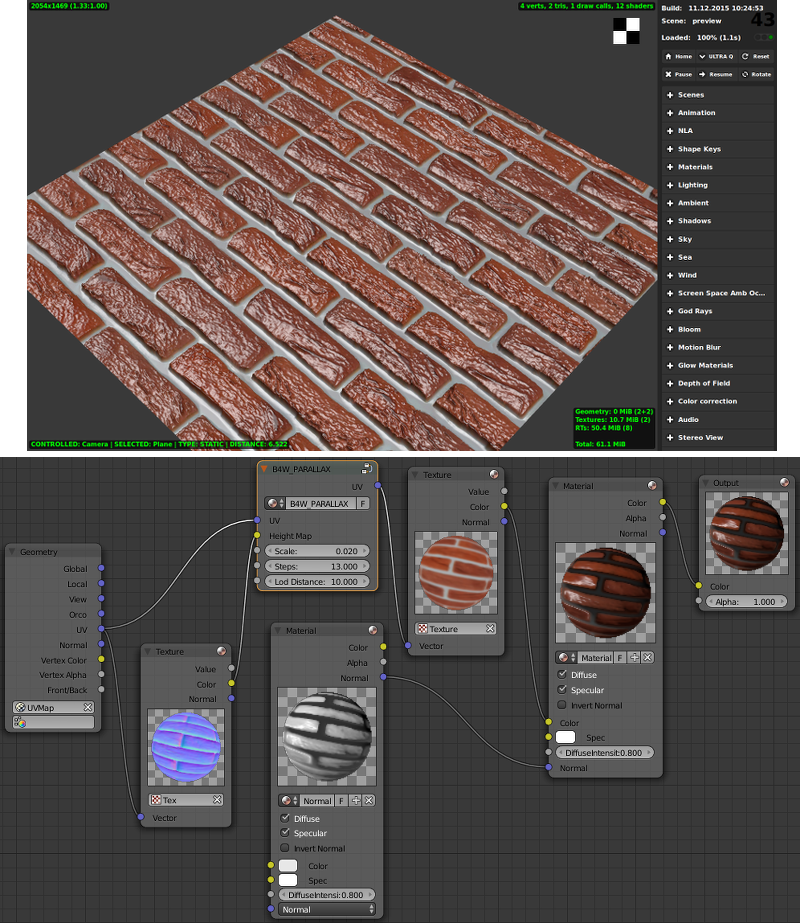
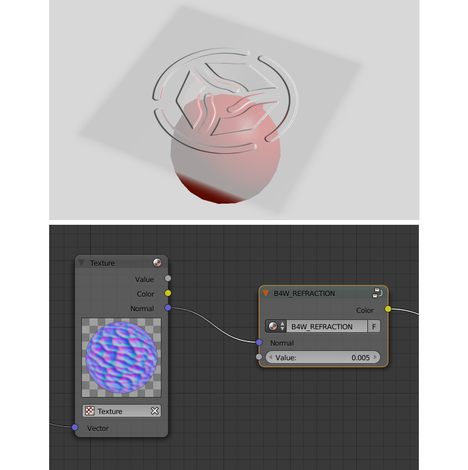
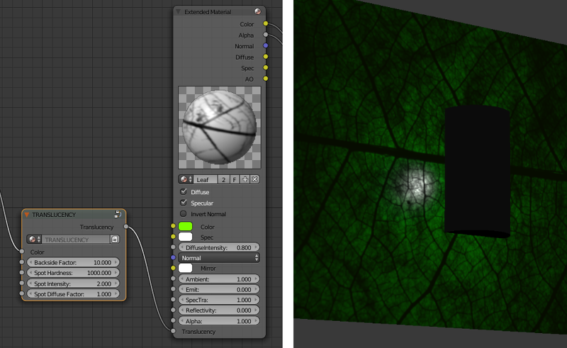

节点材质¶
目录
着色器节点通过将现有的着色器进行基本变换和批处理，显著地扩展了Blender的标准材质的潜力。

标准节点¶
Blend4Web支持所有标准的Blender节点，但他们中的一些工作的不够快，因此不建议在实时应用程序中使用。创建非常复杂的材质，尤其是使用大量的 Geometry 和 Texture 节点，也不推荐。
引擎能部分支持某些Cycles节点。本内容的更详尽描述在 相应章节.
标准节点的性能和支持度在表中说明。
节点名称 |
功能 |
支持 |
性能 |
|---|---|---|---|
摄像机数据 |
用于从活动的摄像头获取的数据 |
全部 |
平均 |
| ColorRamp | 用来产生梯度 |
|
平均 |
HSV合并 |
从给定的色相，明度和饱和度合成颜色 |
全部 |
平均 |
RGB合并 |
从给定的红色，绿色和蓝色通道值组合彩色 |
全部 |
高 |
扩展材质 |
用于将材质添加到节点程序。具有比基本 |
|
平均 |
伽玛 |
用于设置给定的彩色的伽马 |
全部 |
高 |
几何体 |
用于获取有关物体的几何信息 |
|
不推荐大量使用这些节点 |
色调/饱和度 |
用于控制一个给定颜色的色相和饱和度 |
全部 |
底 |
反转 |
反转给定的颜色 |
全部 |
高 |
灯光数据 |
用于从特定光源获取信息 |
|
平均 |
贴图映射 |
用于转换纹理坐标 |
全部 |
平均 |
材质 |
用于一个标准的材质添加到节点程序 |
全部 |
平均 |
数学 |
用于与给定的值进行数学运算 |
全部 |
高 |
混合RGB |
混合两个给定的颜色 |
全部 |
|
法线 |
用于生成法线矢量 |
全部 |
高 |
法线贴图 [1] |
用来插入法线贴图 |
全部 |
平均 |
输出 |
输出节点程序的结果 |
全部 |
平均 |
粒子信息 |
用于获取有关粒子系统信息 |
在 |
平均 |
| RGB | 生成一个RGB颜色 |
全部 |
高 |
RGB 曲线节点 |
设置一个曲线以修改一个给定的色 |
全部 |
平均 |
RGB到BW |
给定的RGB颜色去饱和 |
全部 |
高 |
HSV拆分 |
拆分给定的颜色为色调，饱和度和值 |
全部 |
高 |
独立RGB |
分离给定颜色为红，绿和兰通道 |
全部 |
高 |
挤压值 |
挤压给定值 |
全部 |
高 |
纹理（Texture） |
设置纹理 |
全部 |
不推荐大量使用这些节点 |
数值 |
生成一个数值 |
全部 |
高 |
矢量曲线 |
设置一个曲线以修改一个给定的矢量 |
全部 |
平均 |
矢量数学 |
用于与给定的两个向量进行数学运算 |
全部 |
高 |
矢量变换 [2] |
在世界，相机和物体坐标空间中转换矢量，点或法线。 |
全部 |
平均 |
| [1] | 这个节点的法线贴图使用的 |
| [2] | 如果至少一个内部参数 |
Please keep in mind that node materials have certain limitations concerning the number of specific nodes in the material. These limitations are described here.
游戏引擎特定节点¶
引擎特定的节点扩展标准节点以支持额外的功能。这些节点采用特殊命名的名称和输入格式创建为节点组（节点组 或 节点树）。为方便起见，被打开时，所有的特殊节点已经添加到Blend文件。

夜光输出（B4W_GLOW_OUTPUT）¶
应用 发光效果 到节点材质。除了 B4W_GLOW_OUTPUT 节点，该节点材质应具有 输出 节点。
输入参数¶
- 发光颜色
发光颜色
- 系数
发光的比例。 系数 \(\in [0, 1]\).
系数 = 0 - 没有发光。
Factor \(\in (0, 1]\) - 有一个发光，与 发光颜色 同色。
质量层级（B4W_LEVELS_OF_QUALITY）¶
设置根据当前的图像质量设置输出颜色。可用于，例如，与如果应用程序在移动装置上运行用更简单材质的更换复杂材质。

参见
输入参数¶
- 高质量
节点链接这个参数到
Color参数高，最高的质量使用的情况。- 低
节点链接这个参数到
Color参数低质量的使用情况。- 系数
此值指定什么质量设置（
HIGH或LOW）将在Blender视口中可见。可以从0变化到1，如果该值低于0.5时，HIGH设置将是可见的，如果它是0.5或更高时，LOW设置将是可见的。
视差（B4W_PARALLAX）¶
该节点使用高度贴图实现纹理坐标偏移。
输入参数¶
- UV
源纹理坐标。
- 高度贴图
RGBA纹理压缩到alpha通道的高度图。
- 缩放
纹理坐标偏移的因子。
- 步进
迭代产生纹理的步数坐标偏移。这个值越大最后的质量越好。
- LOD距离
从相距距离最远开始，效果能被观察到。
输出参数¶
- UV
结果是纹理坐标用着输入纹理节点。
反射 (B4W_REFLECT)¶
计算入射矢量和法线矢量之间的反射方向。可用方块贴图应用到物体。

输入参数¶
- 矢量
入射向量。应连接至
Geometry节点的View插座。- 矢量
法向量。需要进行归一化以达到所期望的结果。应连接至
Geometry节点的Normal插座。
输出参数¶
- 矢量
反射向量。应该连接到包含立方贴图的
Texture节点的Vector插座。
折射（B4W_REFRACTION）¶
一个物体产生折射效果。这种效果仅在Blend4Web引擎，而不是在Blender的视口。
输入参数¶
- 法线
添加扰动法线贴图。
- 折射凹凸
扰动强度值。
默认值是0
替换（B4W_REPLACE）¶
节点替换取决于工作环境（即Blender视口或Blend4Web）的输入。在Blender工作时，Color1 输入被连接到 Color 输出和 Color2 输入被忽略。相反在引擎中输入被替换时（这时 Color1 被忽略，Color2 被连接到输出）。节点意欲在视口中显示的一个节点的结构和其他 - 在引擎中。

作为一项规则是用于法线贴图。 Blender的节点材质不支持坐标的切线空间。因此，唯一可能的在视口中来显示法线贴图正确的方法是在 Material 节点内的使用。
输入参数¶
- Color1
节点的设置，这将是在Blender视口中可见。
- Color2
节点设置，就可以在Blend4Web引擎可见。
输出参数¶
- Color
应连接到
Material或扩展Material节点的Color插座。

{kind=link}
{kind=link}
{kind=link}
{kind=link}
半透明（B4W_TRANSLUCENCY）¶
节点实现了一个半透明效果（只对于光源）的薄的物体，如布，树叶，纸张等的效果，由两部分组成：1）物体侧的增亮这是相对的光源和2）光点就在光源处的外观。
{kind=link}
输入参数¶
- Color
它定义了材质异质性单通道纹理 - 白色表示最大的半透明效果，而黑色代表不存在。白色默认情况下使用。
- 背面因子
为这是相对的光源侧的材质颜色校正系数。它描述了半透明区域的颜色丰富性的效果。
背面系数<1 - 增亮
背面系数= 1 - 无修正
背面系数> 1 - 变黑
默认值是0
- 光点硬度
光点模糊的系数。这个值越大就越小，当场和更清晰的现货边缘。缺省值为1000。
- 斑点强度
光斑强度。这个值越亮越大，光点。默认值是1。
- 光斑漫射系数
光斑的颜色材质漫反射颜色影响。
光斑漫射系数 = 0 - 光斑有漫反射颜色
光斑漫射系数 = 1 - 光斑颜色为白色
默认值是0
矢量视图（B4W_VECTOR_VIEW）¶
该节点将一个向量坐标转换到相机的空间。转换是必要的，因为引擎定义矢量坐标系在世界空间。如果正常矢量是由该节点转变它应该只对影响，不用于连接到 Material 或 扩展Material 节点的输出。

输入参数¶
- 矢量
向量的坐标在世界空间。
输出参数¶
- 矢量
矢量坐标在摄像机空间。
线性到 SRGB和SRGB线性（已取消）¶
从sRGB到线性空间转换颜色反之亦然。 从版本15.04这个功能已经被宣布弃用。在较新的版本，具有2.200的数值内置 Gamma 节点应使用将颜色从sRGB转换为线性空间，并用0.455的值相同的节点将颜色从线性空间转换为sRGB。

参见
Cycles 节点¶
注解
Cycles节点的支持是不建议在生产中使用环境的实验性功能。
此外应指出的是，在 Blend4Web 中使用Cycles节点会产生相似的图像，但不是完全跟使用Cycles渲染器本身创建的图像一样。
引擎支持以下 Cycles 节点︰
材质输出(只支持Surface和Displacement输入）;BSDF Diffuse;BSDF Glossy(只支持GGX分布;Roughness参数不影响反射);透明BSDF;Mix Shader;Fresnel;Layer Weight;Image Texture;Environment Texture;Object Info;Bump.
部分支持以下节点︰
Texture Coordinates(From Dupli参数不支持);UV Map(From Dupli参数不支持);Geometry(Pointness和Parametric参数不支持).Emission(不会影响场景中的打灯效果).
Cycles nodes are also supported for World object. However, at the moment node material does not affect the colors of the environment.
其他 Cycles 节点在大多数情况下在不会在Blend4Web中跟他们在Blender中一样良好工作。他们不会工作也可能引起材质的不正常显示和工作。但是，使用这些节点不会在应用程序工作流中导致不稳定。
Limitations¶
Node materials can be complex, but their complexity is limited by the capabilities of the hardware you use. It might not be noticeable most of the time, but if you are making a very complex material, you might exceed the number of textures and varying vectors (vectors that are used by a vertex shader to hand over data to a fragment shader) that your system allows to use in one shader. And even if you won’t, some users of your application might not have devices as powerful as yours, so they can experience problems where you will not.
If you want to know how your scene would behave on a low-end device but don’t have one in your possession, there is also a very useful option called Min Capabilities Mode. It is native to Scene Viewer and can be found on the Tools & Debug panel.
The number of textures and varying vectors supported by your device can be viewed on the WebGL Report web page accessible from the SDK Index page.
The two following tables list various material nodes along with the numbers of textures and varying vectors the engine allocates to them.
Varying Vectors
| Node/Effect | Allocated Varying Vectors |
| Always reserved | 3 |
Input -> Texture node (if the Normal
output is used) |
1 |
Blend4Web -> Parallax node |
1 |
Vector -> Normal Map node |
1 |
Input -> Material node (if the
Shading -> Tangent Shading option is enabled
on that material) |
1 |
Input -> Geometry node (if the UV output
is used) |
1 |
Input -> UV Map cycles node |
1 |
Input -> Texture Coordinate cycles node (if
the UV output is used) |
1 |
Input -> Geometry node (if the
Vertex Color output is used) |
1 |
Shadows on an object with the Alpha Blend
material |
1 - 4 (depending on the number of shadow cascades or shadow casters) |
Shadows on an object with the``Opaque`` material Refraction effect on a material Plane Reflections enabled on an object |
1 |
| Refraction effect on a material | 2 |
Textures
| Node/Effect | Allocated Textures |
Blend4Web -> Parallax node |
1 |
Input -> Texture node |
1 |
Texture -> Environment Texture cycles node |
1 |
|
1 (the number of the nodes in the material doesn’t matter) |
Shadows on an object with the Alpha Blend
material |
1 - 4 (depending on the number of shadow casters and/or shadow cascades) |
Shadows on an object with an Opaque material |
1 |
| Refraction effect on a material | 2 |
World -> Environment Lighting -> SkyTexture is
enabled for a World |
1 |
| Reflection effect on an object | 1 |